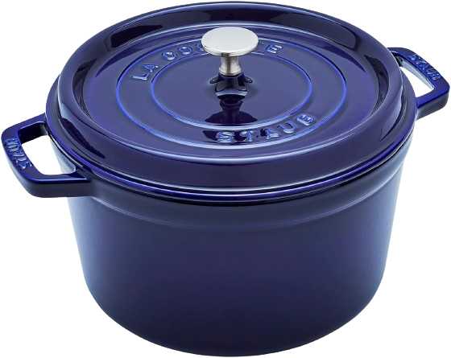
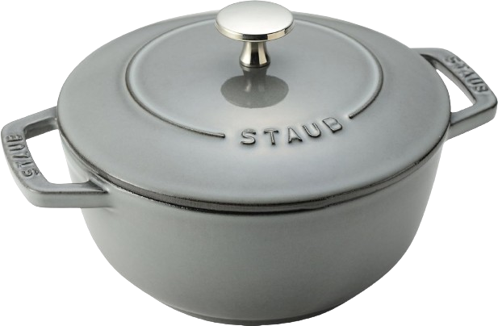
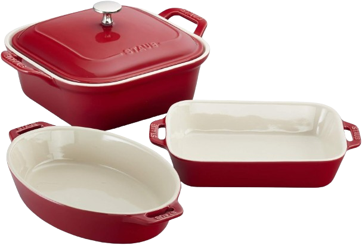
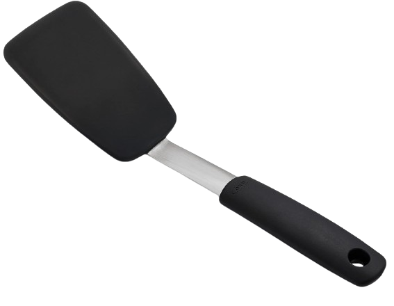
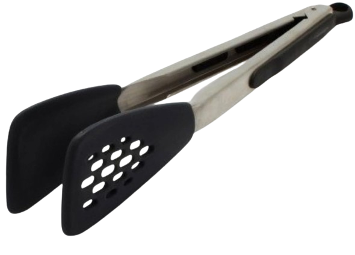
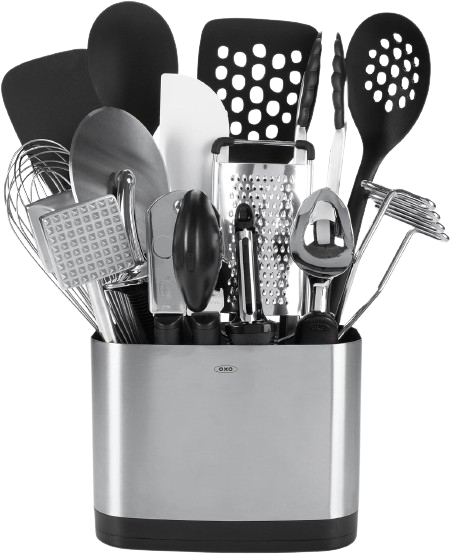

The Cast Iron You Can Trust
For nearly 50 years, Staub has handcrafted exceptional cast iron cookware in the Alsace region of France. Our enameled cast iron combines the heating performance and longevity of pure cast iron with the colorful, smooth enameled finish that makes Staub so distinctive.
-
Timeless Craftsmanship
Staub cast iron cookware is handcrafted by skilled artisans in Alsace, France using generations-old techniques that ensure lasting performance.
-
Versatile Functionality
From braising, searing and roasting to baking and broiling, Staub transitions seamlessly from stovetop to oven for limitless cooking potential.
-
Superior Results
With Staub’s exceptional ability to enhance flavors, lock in juices, retain heat and deliver perfect sear marks, your meals reach new heights.
Choose Your cookware
With standout designs that transition beautifully from stovetop to table, Staub’s cookware adds function and French flair to any kitchen. Discover centuries of French culinary heritage built into every piece.
-

Cast Iron Dutch Oven
Staub Cast Iron Dutch Oven 5-qt Tall Cocotte, Made in France
-

WANABE
Staub Wa-NABE 40501-006 Wanabe, Gray, M, 7.1 inches (18 cm), Double Handed, Cast Enamel, Pot, Rice Cooking, 2 Cups, Induction Compatible
-

Ceramics Baking Pans
Staub Ceramics 4-pc Baking Pans Set, Casserole Dish with Lid, Brownie Pan, Cherry
Bringing Centuries of Cast Iron Mastery
With roots dating back to 1450 in the Alsace region of France, Staub draws on centuries of artisinal iron craft and enameling expertise. Founded in 1974 by Francis Staub, today the company still manufactures its acclaimed cookware in the French village of Merkwiller-Pechelbronn. Skilled artisans handcraft each piece from raw cast iron, applying colorful, smooth enamel coatings designed to last.
For nearly 50 years, the Staub family legacy has passed down generations of cast iron mastery across every step of the production process. Just as in Francis Staub’s original workshop in 1974, each piece continues to be checked by employees to ensure the highest quality. This rich heritage infuses over 300 years of French culinary practice and technique into cookware cherished as heirlooms. Discover Staub’s deep-rooted lineage of nutrition, flavor and conviviality expressed through beautiful enameled cast iron cookware crafted for the ages.
Protect Your Cookware with Silicone Utensils
Treat your cookware with care by using silicone utensils for nonstick protection. Softer than metal, our BPA-free silicone spatulas, spoons and more allow you to stir, mix and serve without scratching enameled and nonstick surfaces. Keep your Staub in pristine condition while enjoying smooth, seamless cooking.
-

Silicone Flexible Turner
Staub OXO Good Grips Small Silicone Flexible Turner Black
-

Kitchen Utensil Set
Staub OXO Good Grips 15-Piece Everyday Kitchen Utensil Set, Silver
-

Silicone Flexible Tongs
Staub OXO Good Grips Silicone Flexible Tongs Stainless,Black
Cookware for any occasion
The Staub cookware collection embodies the perfect marriage of tradition and modernity, making it an essential for any kitchen. Renowned for its versatility, Staub’s range includes everything from classic cast iron Dutch ovens to innovative ceramic dishes, each piece thoughtfully designed to cater to a wide array of cooking needs.
-
Anniversary Dinner
Impress your special someone by preparing an elegant, romantic meal at home using Staub’s signature cocotte. Slow cook coq au vin or beef bourguignon to perfection in the handsome pot that transitions beautifully from stovetop to table.
-
Holiday Feast
This holiday season, bake a mouthwatering ham or roast turkey right in Staub’s cast iron oven, delivering juicy, flavorful results. The self-basting lid continuously recycles meat juices back over the food for hours of hassle-free roasting.
-
Birthday Brunch
Treat weekend guests by whipping up baked cinnamon apple pancakes using Staub’s ceramic baking dish. Everyone will be amazed by fluffy hotcakes with delicious browned edges fresh from the oven.
-
Game Day Delights
Move the party from the living room into the kitchen! Impress fans by keeping queso, chili, dips and more piping hot throughout the entire game in Staub’s cast iron mini cocottes. The perfect vessels to enjoy scrumptious apps all day long.
Our clients thought
The resounding feedback from our clients underscores the exceptional quality and performance of Staub cookware. Home cooks and professional chefs alike rave about the transformative experience of using these pieces in their kitchens.
-
Staub Surpasses the Test of Time
I’ve cooked with cast iron and enamel brands over the years, even inheriting a Dutch oven from my dad. But after chips, cracks and flakes appeared, I discovered Staub’s superior craftsmanship. Now I proudly collect their cookware, finding the quality well worth the investment for my passion. Each holiday season I gift myself a new figural or French oven, watching my vibrant collection grow. I adore whipping up stews, breads and more in my tall black beauty that’s perfect for smaller gatherings. At just $149, it makes a fantastic present too! After a decade of almost daily use, my Staubs still look brand new thanks to the durable layers of gorgeous enamel. I know my children will inherit timeless pieces they’ll treasure like I do. No other brand compares to Staub’s reliability, versatility and ability to make everything flavorful and tender. This cookware improves with age – I’ll certainly be enjoying it for a lifetime! The key focus areas in my revision were highlighting the enamel durability and quality over time, the passion for collecting different Staub pieces, the affordability of current deals, and how the enameled cast iron will get passed down for generations, retaining its value and performance. Please let me know if you would like me to modify anything!
Betty D. Cohen
Customer
-
A Slim Yet Spacious Lifesaver
As a lover of long-simmered, lemony veggie soups, I once ruined multiple pots that couldn’t withstand the acidity. Then I discovered Staub’s magic: colorful, smooth enamel that stays pristine despite anything I throw in it! I first bought a 9 quart cocotte built like a cauldron – so heavy and huge yet still gorgeous after nearly a decade of soup. When I wanted smaller batches, I turned to the 5 quart tall cocotte, with its uniquely slim, stockpot shape that fits my tiny kitchen perfectly. Don’t judge its rough handles – they protect against rust and chips just like the rest of this Staub workhorse. I use this pot almost daily, always impressed at how the tall sides cut down splatter. Despite uncontrolled spoon scrapes and frequent lemon baths, it looks brand new! No other enamel resists scratches and stains like Staub. I know my great-grandkids will inherit this pot. For budding soup fanatics with limited space: try the 5 quart tall cocotte. You’ll never go back! I focused the testimonial on the durability of the enamel over years of use, the uniqueness of the 5 quart tall shape, how the rough handles shouldn’t deter people, and Staub’s reliability over other brands, especially for acidic ingredients like lemon. Please let me know if you would like me to modify the testimonial further!
Gary D. Davisson
Customer
-

My Search Ended with Staub
When comparing dutch ovens, I wavered between my two favorite brands – until this gorgeous burnt orange Staub cocotte called my name on sale. The smooth enameled exterior provides vibrant, stylish flair in my kitchen, while inside, the matte graphite resists stains and scratches no matter what I cook. Soups and stews slide right off thanks to the natural nonstick surface. The precision lid sealed in juices perfectly for my first tender pot roast. Le Creuset lids often chip or crack from heat exposure, but Staub’s steel lid topper stays strong batch after batch. After just one use, I realized Staub’s superior craftmanship and materials. This dutch oven distributes and retains heat so evenly and effectively for enhanced browning and caramelization too. While both brands come at a cost, the value of my Staub cocotte will only increase over time as I pass this heirloom piece down through generations. I can’t justify Le Creuset prices knowing I found my forever pot here. Any home cook or aspiring chef needs Staub’s magic in their kitchen! I focused the testimonial on the Staub cocotte being the better option compared to Le Creuset, highlighted the materials, durability, performance for cooking, value over time as an heirloom, and overall superiority. Please let me know if you would like me modify or improve the testimonial further!
Sherry I. Miller
Customer